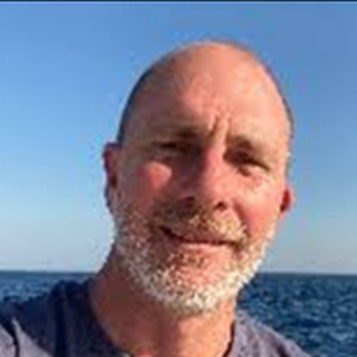
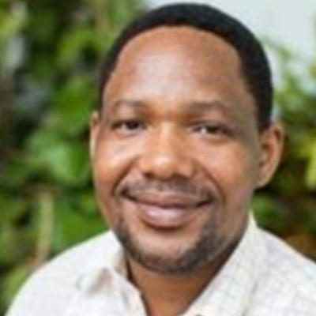
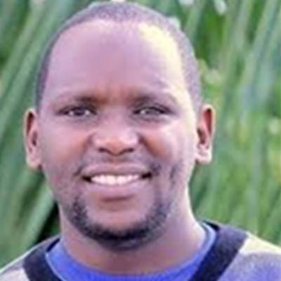

Team & Partners
CliMPA brings together regional and international partners across five work packages, coordinated through WIOMSA.
Team members
Dr. Joseph Maina
Project PI
Environmental (systems) informatist and decision scientist · Macquarie University, Sydney, Australia

Dr. Louis Celliers
Project PI
Senior Scientist · GERICS, Climate Service Center Germany
Dr. Kulwa Mtaki
Member
Marine scientist · Warden, Marine Parks and Reserves Unit, Tanzania

Dr. Rushingisha George
Member
Senior researcher · Tanzania Fisheries Research Institute (TAFIRI)
Dr. Majambo Jarumani
Member
Climate specialist · Alliance of Bioversity International & CIAT (ABC)

Mr. James Mbugua
Member
Geospatial data analyst · CORDIO East Africa
Wanjiku Githu
Member
Technology & Data · Alliance of Bioversity International & CIAT (ABC)